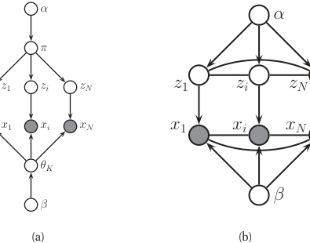
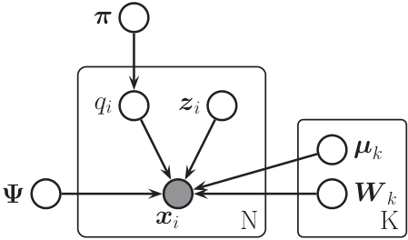
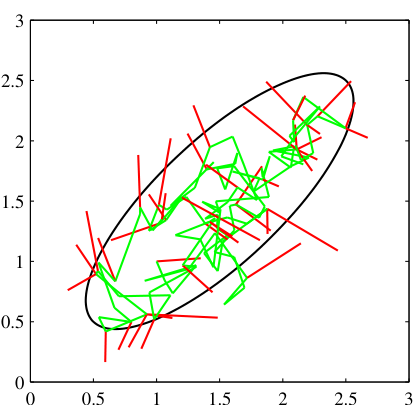
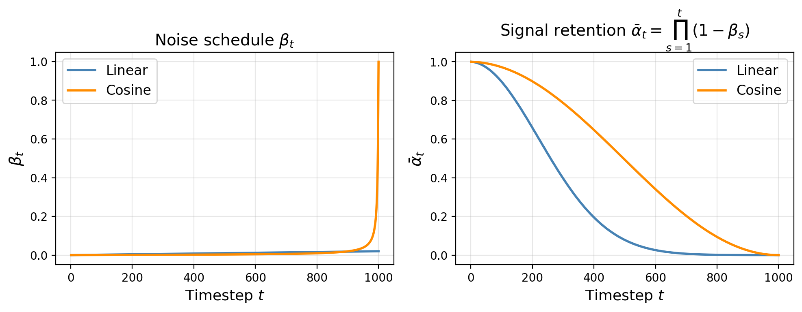
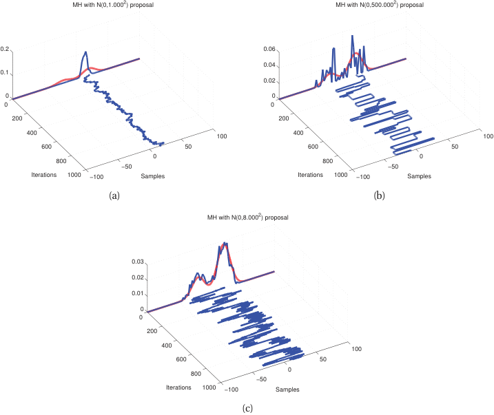
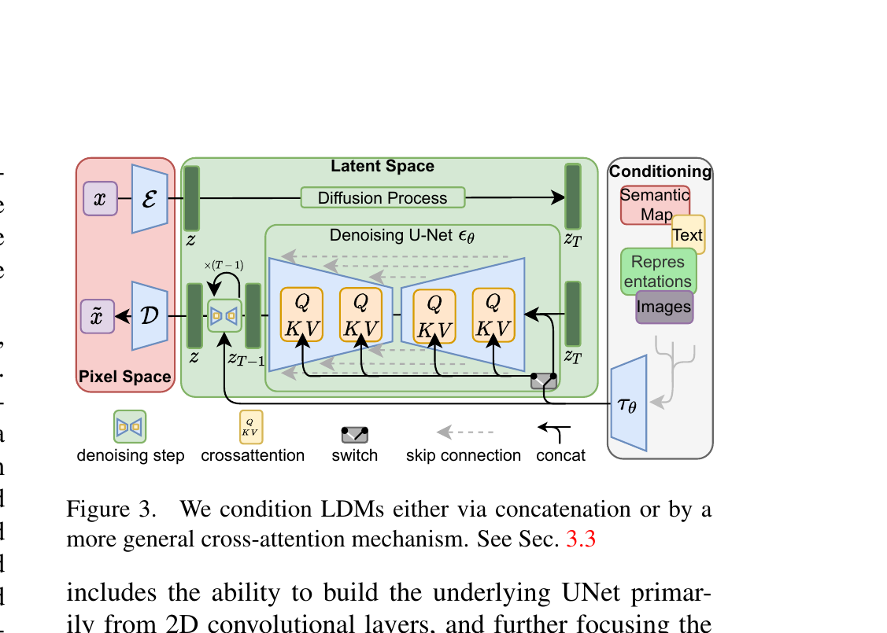
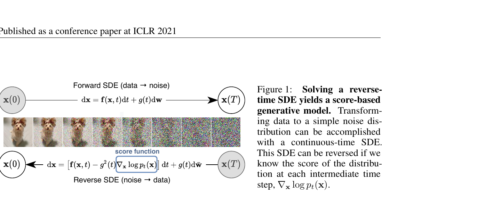

Mathematical Foundations of AI & ML
Unit 11: Generative Models — VAE & Diffusion
FAU Erlangen-Nürnberg


Where we are in the course
Behind us:
- Unit 5: autoencoders compress.
- Unit 8: KL divergence and Bayesian thinking.
- Units 9–10: encoders that produce useful representations; transformers as the architecture behind them.
- We can encode. We cannot generate.
Today (Unit 11):
- From discriminative to generative.
- Variational Autoencoders (VAEs): probabilistic latent + sampling.
- Diffusion models: learn to denoise.
- The dominant generative paradigms of the 2020s.
Why this unit matters
- Inverse design: generate a microstructure with target Young’s modulus and density.
- Data augmentation: synthesize plausible spectra to expand a labeled training set.
- Scientific discovery: sample candidate molecules conditioned on a desired property.
- Modern AI literacy: every “AI generates X” headline since 2022 is a diffusion model.
Recap: what an autoencoder cannot do
- An AE encoder \(f_\phi: \mathbb{R}^d \to \mathbb{R}^k\) maps observed \(x\) to a deterministic latent \(z = f_\phi(x)\).
- Question: can we sample a new \(x\)? Specifically, can we sample some \(z\) and decode?
- No. We don’t know the distribution of \(z\) over the training data — the latent might cluster weirdly, leave gaps (“holes”), or have no clean prior structure.
- Sampling random \(z\) from \(\mathcal{N}(0, I)\) → decode → garbage.
Missing piece: a controllable distribution over \(z\) — and a tractable way to sample from it.
What is a generative model?
A generative model represents (or approximates) the data distribution \(p(x)\). It must support:
- Sampling: produce \(x \sim p(x)\).
- Likelihood (sometimes): evaluate \(p(x)\) for a given \(x\).
- Conditioning: sample from \(p(x \mid c)\) for a condition \(c\) (target property, class label, prompt).
Today: VAEs (sampling + approximate likelihood) and diffusion (sampling, no exact likelihood, but extraordinary quality).

Learning outcomes
By the end of this unit, students can:
- Explain why a vanilla autoencoder cannot generate new samples.
- Derive the VAE ELBO at intuition depth and use the reparameterization trick.
- Use a trained VAE: encode, sample latent, decode.
- Describe the forward (noising) and reverse (denoising) processes of a diffusion model.
- Apply classifier-free guidance for conditional generation.
- Compare VAEs, diffusion, GANs, and normalizing flows on the trade-off axes.
Roadmap of today’s 90 min
- What is a generative model? (~5 min)
- VAE setup and intuition (~10 min)
- VAE loss: ELBO + reparameterization (~15 min)
- Training and using a VAE (~5 min)
- VAE → diffusion bridge (~5 min)
- Forward diffusion (~10 min)
- Reverse diffusion (~15 min)
- Sampling and conditional generation (~10 min)
- Score matching, alternatives, materials applications (~10 min)
- Wrap (~5 min)
VAE — the architectural change
Vanilla AE:
\[ x \xrightarrow{f_\phi} z \xrightarrow{g_\theta} \hat x \]
Encoder produces a single point \(z\).
VAE:
\[ x \xrightarrow{f_\phi} (\mu, \sigma) \xrightarrow{\text{sample}} z \xrightarrow{g_\theta} \hat x \]
Encoder produces a distribution \(\mathcal{N}(\mu, \sigma^2 I)\). Sample \(z\) from it.
The latent \(z\) is now a random variable, not a deterministic function of \(x\).

VAE — the prior on \(z\)
- We want a tractable distribution to sample from at generation time.
- Choose a fixed prior \(p(z) = \mathcal{N}(0, I)\) — the standard Gaussian on \(\mathbb{R}^k\).
- Constrain training so that the aggregate posterior \(q_\phi(z) = \mathbb{E}_{x}[q_\phi(z \mid x)]\) stays close to \(p(z)\).
- At generation time: sample \(z \sim \mathcal{N}(0, I)\), decode.
This is the core trick: train the encoder to push latents toward a known prior, so we can sample from that prior at test time.

VAE — the loss, intuitively
For each training point \(x\), the VAE loss has two terms:
- Reconstruction term: how well does decoding \(z\) recover \(x\)? (Same as a vanilla AE.)
- Prior-matching term: is \(q_\phi(z \mid x)\) close to \(p(z) = \mathcal{N}(0, I)\)? Use KL divergence.
\[ \mathcal{L}(\theta, \phi; x) = \underbrace{-\mathbb{E}_{z \sim q_\phi(z|x)}[\log p_\theta(x \mid z)]}_{\text{reconstruction}} + \underbrace{\mathrm{KL}(q_\phi(z \mid x) \,\|\, p(z))}_{\text{prior-matching}} \]
The ELBO — what’s that?
The actual quantity we want to maximize is \(\log p_\theta(x)\) — but it is intractable (an integral over \(z\)).
Trick: derive a tractable lower bound. \[ \log p_\theta(x) \geq \mathbb{E}_{q_\phi(z|x)}[\log p_\theta(x \mid z)] - \mathrm{KL}(q_\phi(z \mid x) \,\|\, p(z)) = \mathrm{ELBO}. \]
Maximizing the ELBO maximizes a lower bound on the log-likelihood. We are almost doing maximum likelihood.
ELBO derivation sketch
Start with \(\log p(x) = \log \int p(x, z) dz\). Multiply and divide by \(q_\phi(z|x)\):
\[ \log p(x) = \log \int q_\phi(z|x) \frac{p(x, z)}{q_\phi(z|x)} dz \geq \int q_\phi(z|x) \log \frac{p(x, z)}{q_\phi(z|x)} dz \quad \text{(Jensen)}. \]
Expanding \(p(x, z) = p(x|z) p(z)\) and rearranging: \[ \log p(x) \geq \mathbb{E}_q[\log p(x|z)] - \mathrm{KL}(q(z|x) \| p(z)). \]
The reparameterization trick
- We need to backpropagate through the sampling step \(z \sim \mathcal{N}(\mu, \sigma^2)\).
- Problem: sampling is not differentiable.
- Solution: rewrite the sample as a deterministic function of a noise variable: \[ z = \mu_\phi(x) + \sigma_\phi(x) \odot \epsilon, \quad \epsilon \sim \mathcal{N}(0, I). \]
The randomness sits in \(\epsilon\) (no parameters); \(\mu, \sigma\) are deterministic functions of \(\phi\). Now gradients flow from the loss through \(z\) back to \(\phi\).

KL between Gaussians — closed form
When \(q_\phi(z \mid x) = \mathcal{N}(\mu, \mathrm{diag}(\sigma^2))\) and \(p(z) = \mathcal{N}(0, I)\):
\[ \mathrm{KL}(q \,\|\, p) = \frac{1}{2}\sum_{j=1}^{k}\!\left(\mu_j^2 + \sigma_j^2 - \log \sigma_j^2 - 1\right). \]
- \(\mu_j^2\): penalize means away from 0.
- \(\sigma_j^2 - \log \sigma_j^2 - 1\): penalize variances away from 1 (minimum at \(\sigma_j = 1\)).
- Easy to compute, no Monte Carlo needed.
VAE training step — the recipe
~10 lines. Encoder predicts \(\log \sigma\) for numerical stability. Sample once per training step (more samples = lower-variance gradient estimate but more compute).
β-VAE: weighted KL
- Vanilla VAE: equal weight on reconstruction and KL.
- β-VAE: \(\mathcal{L} = \mathrm{recon} + \beta \cdot \mathrm{KL}\).
- \(\beta > 1\): stricter prior matching → more disentangled, smoother latent, worse reconstruction.
- \(\beta < 1\): looser prior → sharper reconstruction, latent less Gaussian.
- Choice depends on use case: generation quality vs interpretability.
Posterior collapse
- Failure mode: the encoder outputs \(\mu \approx 0, \sigma \approx 1\) for all inputs — the latent ignores \(x\).
- The decoder then ignores \(z\) and reconstructs from “average” data.
- Symptom: KL term ≈ 0; reconstruction is poor.
- Causes: too-strong KL weight; too-powerful decoder.
- Mitigations: KL warm-up (start with low β, increase); weaker decoder; β-VAE with \(\beta < 1\).
Generating new data from a trained VAE
- Sample \(z \sim \mathcal{N}(0, I)\).
- Decode: \(x_{\text{new}} = g_\theta(z)\).
- (Optional) for a stochastic decoder: also sample \(x \sim p_\theta(x \mid z)\).
That’s it. No labels needed; no special procedure. The trained encoder/decoder pair is now also a sampler.

Latent interpolation in a VAE
- Encode two real samples \(x_A, x_B\) → latents \(z_A, z_B\).
- Interpolate: \(z_t = (1-t) z_A + t z_B\) for \(t \in [0, 1]\).
- Decode each \(z_t\).
- Result in a well-trained VAE: a smooth path between the two outputs in \(x\)-space.
For materials: interpolate between two micrographs to see how phases transition; interpolate between two compositions to traverse phase space.
VAE summary
- Architecture: encoder → distribution → reparameterized sample → decoder.
- Loss: reconstruction + KL to standard Gaussian prior.
- Sampling: \(z \sim \mathcal{N}(0, I)\), decode.
- Strengths: principled, fast sampling, smooth latent.
- Weaknesses: blurry samples (the KL prior tends to “smooth out” generation).
VAEs sample in one step. What if we used many?
- A VAE samples \(z\) from a learned prior, then decodes in one step.
- The single-step decode has to do all the work — and produces blurry outputs.
- What if we generated through many small steps, each easier than the last?
This is the diffusion idea: start from pure noise, gradually denoise to produce a sample.

Analogy: diffusion also iterates many small denoising steps. Unlike MCMC, the denoiser is a learned neural network.
The diffusion picture
- Forward process (fixed, no learning): gradually add Gaussian noise to data.
- Reverse process (learned): gradually remove noise to recover data.
- At training time: pick a random timestep \(t\), add the right amount of noise to a real sample, train a network to predict the noise.
- At generation time: start from \(x_T \sim \mathcal{N}(0, I)\), iterate the learned reverse process.
Forward process — definition
A Markov chain that progressively adds Gaussian noise:
\[ q(x_t \mid x_{t-1}) = \mathcal{N}\!\left(x_t;\; \sqrt{1 - \beta_t}\, x_{t-1},\; \beta_t I\right). \]
- \(\beta_t \in (0, 1)\) is a noise schedule, typically small (e.g., 0.0001 to 0.02 over 1000 steps).
- Each step shrinks the signal by \(\sqrt{1 - \beta_t}\) and adds isotropic Gaussian noise of variance \(\beta_t\).
- After enough steps, \(x_T\) is approximately \(\mathcal{N}(0, I)\).
Forward process — closed-form marginal
The composition of \(t\) Gaussian steps is itself Gaussian:
\[ q(x_t \mid x_0) = \mathcal{N}\!\left(x_t;\; \sqrt{\bar\alpha_t}\, x_0,\; (1 - \bar\alpha_t) I\right), \]
where \(\alpha_t = 1 - \beta_t\) and \(\bar\alpha_t = \prod_{s=1}^{t} \alpha_s\).
Equivalently: \[ x_t = \sqrt{\bar\alpha_t}\, x_0 + \sqrt{1 - \bar\alpha_t}\, \epsilon, \quad \epsilon \sim \mathcal{N}(0, I). \]
What the schedule looks like
- \(t = 0\): pure data. \(\bar\alpha_0 = 1\), no noise.
- \(t \approx T/2\): half noise, half data. The hard regime — both signal and noise visible.
- \(t = T\): \(\bar\alpha_T \approx 0\). Effectively pure Gaussian noise.
- Total steps \(T\): typically 1000 in DDPM, fewer (50–250) in modern accelerated samplers.
- Cosine schedule (Nichol and Dhariwal 2021): \(\bar\alpha_t = \cos^2\!\left(\tfrac{t/T+s}{1+s}\tfrac{\pi}{2}\right)/\cos^2\!\left(\tfrac{s}{1+s}\tfrac{\pi}{2}\right)\). Keeps signal longer at early steps; avoids abrupt destruction.

Reverse process — what we want
Ideally:
\[ p(x_{t-1} \mid x_t) = ? \]
- We want to undo the noising step: given \(x_t\), where was \(x_{t-1}\)?
- This is a Gaussian — but its mean and variance depend on the unknown \(x_0\).
- We approximate \(p(x_{t-1} \mid x_t)\) with a learned Gaussian \(p_\theta(x_{t-1} \mid x_t)\).
Reverse process — parameterization
The cleanest parameterization: train a network \(\epsilon_\theta(x_t, t)\) to predict the noise that was added:
\[ \epsilon_\theta(x_t, t) \approx \epsilon \quad \text{where} \quad x_t = \sqrt{\bar\alpha_t}\, x_0 + \sqrt{1 - \bar\alpha_t}\, \epsilon. \]
Why predict noise (instead of \(x_0\) or \(x_{t-1}\))? Empirically: noise prediction trains more stably and produces better samples. Also: noise has unit variance everywhere, so the network output is well-scaled.
The DDPM training loss
The simplified loss is just MSE on noise:
\[ \mathcal{L}_{\text{simple}} = \mathbb{E}_{t, x_0, \epsilon}\!\left[\left\| \epsilon - \epsilon_\theta\!\left(\sqrt{\bar\alpha_t} x_0 + \sqrt{1 - \bar\alpha_t} \epsilon,\; t\right) \right\|^2\right]. \]
Algorithm (training): 1. Sample \(x_0\) from data, \(t \sim \mathrm{Uniform}\{1, \ldots, T\}\), \(\epsilon \sim \mathcal{N}(0, I)\). 2. Compute \(x_t = \sqrt{\bar\alpha_t} x_0 + \sqrt{1 - \bar\alpha_t}\, \epsilon\). 3. Predict \(\hat\epsilon = \epsilon_\theta(x_t, t)\). 4. Loss: \(\|\epsilon - \hat\epsilon\|^2\). 5. Backpropagate.
What is \(\epsilon_\theta\)?
- A neural network that takes a noisy image and a timestep, outputs predicted noise.
- Most common architecture: a U-Net (Ronneberger et al. 2015) with timestep embedding (sinusoidal).
- Contracting path encodes context; expansive path restores resolution with skip connections.
- Modern alternative: a transformer (DiT — Diffusion Transformer; Stable Diffusion 3).
- Receives time \(t\) as an additional input — same network handles all timesteps.

Sampling from a trained diffusion model
Input: trained ε_θ
1. x_T ← sample from N(0, I)
2. for t = T, T-1, ..., 1:
3. ε̂ ← ε_θ(x_t, t)
4. compute mean μ_t and variance σ_t² from ε̂
5. x_{t-1} ← μ_t + σ_t · z (z=0 at t=1)
6. return x_0\(T\) network calls per sample. With \(T = 1000\), this is slow compared to a VAE (1 call) — the dominant practical limitation.

DDIM and faster sampling
- DDPM uses stochastic reverse steps. Each step has injected noise.
- DDIM (Song et al. 2021): a deterministic reverse process. Same trained network, fewer steps.
- 50 DDIM steps ≈ 1000 DDPM steps in quality.
- Modern solvers (DPM-Solver, EDM): 10–25 steps with state-of-the-art quality.
Conditional diffusion
- We often want \(p(x \mid c)\): generate an image conditioned on a caption, a microstructure conditioned on a target property.
- Modify the network: \(\epsilon_\theta(x_t, t, c)\) — pass the condition as additional input.
- Train with \((x_0, c)\) pairs; sample with the desired \(c\).
For text-to-image: \(c\) is a text embedding (often from a frozen CLIP encoder; Unit 9).
Classifier-free guidance
The trick that makes conditional diffusion actually work well:
- During training: with probability \(p\) (e.g., 10%), drop the condition. Train one model for both conditional and unconditional.
- At sampling time: \[ \tilde\epsilon_\theta(x_t, c) = (1 + w) \epsilon_\theta(x_t, c) - w \, \epsilon_\theta(x_t, \emptyset). \]
- \(w\): guidance scale. \(w = 0\): pure conditional. \(w > 0\): amplify the difference between conditional and unconditional → stronger conditioning.
Latent diffusion (briefly)
- Diffusion in pixel space is expensive: 1024×1024 images mean huge networks.
- Latent diffusion (Rombach et al. 2022) (Stable Diffusion): train a VAE first, then run diffusion in the VAE’s latent space (e.g., 64×64 latents from 512×512 images).
- 64× fewer pixels in the diffusion process. Fast and high-quality.
- VAE + diffusion together — both halves of today’s lecture in one model.
- Conditioning (text, semantic map, class) via cross-attention inside the U-Net.

Score matching — one-slide pointer
- The score of a distribution: \(s(x) = \nabla_x \log p(x)\).
- Score matching: train a network to estimate the score directly.
- Key result (Vincent 2011): denoising = score matching at small noise levels.
- This is why predicting noise works: predicting noise is, up to a constant, predicting the score.
- Diffusion models are formally score-based generative models (Song et al. 2021).

GANs
- Generator \(G\) produces fake samples. Discriminator \(D\) distinguishes real from fake.
- Two networks trained adversarially: \(G\) minimizes, \(D\) maximizes a min-max objective.
- Strengths: very fast sampling (one network call), historically sharp samples.
- Weaknesses: training instability, mode collapse, no likelihood, hard to evaluate.
- Largely supplanted by diffusion since 2022, but still used (StyleGAN for fast image synthesis).
Normalizing flows
- A sequence of invertible transformations \(f_1, \ldots, f_K\) from a base distribution (Gaussian) to data.
- Strengths: exact likelihood, exact sampling.
- Weaknesses: invertibility constraint restricts architecture choices; usually worse sample quality than diffusion.
- Specialized uses: scientific applications where exact likelihoods matter (lattice QCD, free-energy estimation).
Choosing the right generative model
| VAE | Diffusion | GAN | Flow | |
|---|---|---|---|---|
| Sampling speed | fast | slow | fast | fast |
| Sample quality | low (blurry) | very high | high | medium |
| Training stability | good | very good | poor | good |
| Exact likelihood | no (lower bound) | no | no | yes |
| Best for | fast prototyping, latent geometry | high-quality generation, conditioning | speed-critical | exact likelihood |
Inverse design via conditional diffusion
- Goal: find an \(x\) (composition, microstructure, lattice) that satisfies a target property \(y\).
- Train a conditional diffusion model on \((x, y)\) pairs.
- At inference: condition on the desired \(y\); sample candidate \(x\)’s.
- Verify candidates with a physics simulator or experiment.
- Iterate: failed candidates → add to training data → re-train.
This is the materials-design loop in 2026: generative + simulator + experiment, in a closed loop.
Microstructure generation
- Diffusion model on 2-D micrographs.
- Conditional on processing parameters (temperature, cooling rate).
- Generates plausible synthetic micrographs for parameters not in training data.
- Use cases: data augmentation, exploratory design, surrogate for expensive characterization.
Spectral synthesis
- 1-D diffusion or VAE for spectra (XRD, Raman, EELS).
- Conditional on phase composition, processing state.
- Useful for data augmentation when labeled measurements are scarce.
- Useful for simulation: a fast sampler that respects measured statistics.
Bridge to Unit 13: physics-constrained generation
- Pure generative models can produce physically impossible outputs.
- Fix: encode physics as soft penalties in the diffusion loss (Unit 13 will dive in).
- Or: train on simulator-validated data only.
- Or: use a physics-aware decoder (e.g., differentiable PDE solver in the loop).
Generative + physics is one of the most active research frontiers in materials ML.
Three exam-must-knows
- VAE maximizes the ELBO = reconstruction term − KL divergence to a Gaussian prior. The reparameterization trick (\(z = \mu + \sigma \odot \epsilon\)) makes the gradient flow through sampling.
- Diffusion training: predict the noise added to a clean sample at a random timestep; loss is MSE on the predicted noise. Sampling: start from \(\mathcal{N}(0, I)\), iterate the learned reverse process.
- Trade-off: VAE is fast at sampling and has explicit lower-bound likelihoods, but produces blurry samples. Diffusion is slow at sampling (many steps) but currently produces the highest-quality samples. Classifier-free guidance is the standard way to make conditional diffusion follow conditions strongly.
Reading and bridge to Unit 12
Note
Reading for Unit 12 (Uncertainty Quantification). Skim Bishop Ch. 6 (kernel methods, Gaussian processes) and Murphy 2nd ed. Ch. 17 (Bayesian deep learning). Background reading: Rasmussen & Williams “Gaussian Processes for Machine Learning.”
Unit 12: today we learned to generate. Next, we learn to say what we don’t know. Gaussian processes give us calibrated uncertainty bands; deep ensembles and conformal prediction approximate this for neural networks.
Continue
- ← Previous: Unit 10 — Attention & Transformers
- → Next: Unit 12 — Uncertainty in Predictions
- All courses
Notebook companion + references
Week 11 notebooks (in example_notebooks/ once added)
- VAE on Fashion-MNIST: train, plot 2-D latent, interpolate, generate, observe KL term.
- Toy diffusion in 200 lines: 2-D Swiss roll, tiny U-Net, DDPM training and sampling.
- Conditional diffusion with classifier-free guidance: vary \(w\), observe diversity vs fidelity.
- Bonus: latent diffusion — train a small VAE first, then a tiny diffusion in the latent space.
Strongly recommended: Lilian Weng’s blog post “What are diffusion models?” — the best free overview, with derivations and intuition.
Learning outcomes — recap
By the end of this unit, students can:
- Explain why a vanilla autoencoder cannot generate new samples.
- Derive the VAE ELBO at intuition depth and use the reparameterization trick.
- Use a trained VAE: encode, sample latent, decode.
- Describe the forward and reverse processes of a diffusion model.
- Apply classifier-free guidance for conditional generation.
- Compare VAE, diffusion, GAN, and flow on the trade-off axes.

© Philipp Pelz - Mathematical Foundations of AI & ML